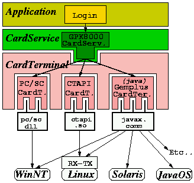

|
This page is intended for developers that are not using the CardTable platform. If you want to use the OpenCard components you can either:
|
|
The CardServices components are a part of a Java framework named OpenCard Framework which goal is to provide high level components for applications that make use of smart cards. In order to be able to use them, a number of other software packages have to be previously downloaded and installed. The next sections describe the architecture of an OpenCard-based application and explains how to set-up the mandatory software platform. |
First, we describe how a Java application can access smart cards through layers of software, the workstation Parallel/Serial ports (using the "Comm API"). Then, a section provides URLs for the necessary distributions, environment setting up information, and at last indications are given on how to perform some tests to check that everything is working ok (it is then advised to have a SIM card available, otherwise any ISO7816-3 compliant card will allow to at least run the OpenCard ATR printing test).
The Fig 1. picture below summarizes how a Java application (here "Login") can use a pure Java way to communicate with a smartcard.
We can distinguish the following software layers, starting from the application:
|  |
| Fig 1: An OpenCard-based application. |
Note that non-pure Java CardTerminals can be used too, such as wrappers to the PC/SC resource manager (see the PC/SC page in the Gemplus Developers Technology section).
As a consequence of this architecture, a number of software packages are required. The list is detailed below.
Necessary components are: